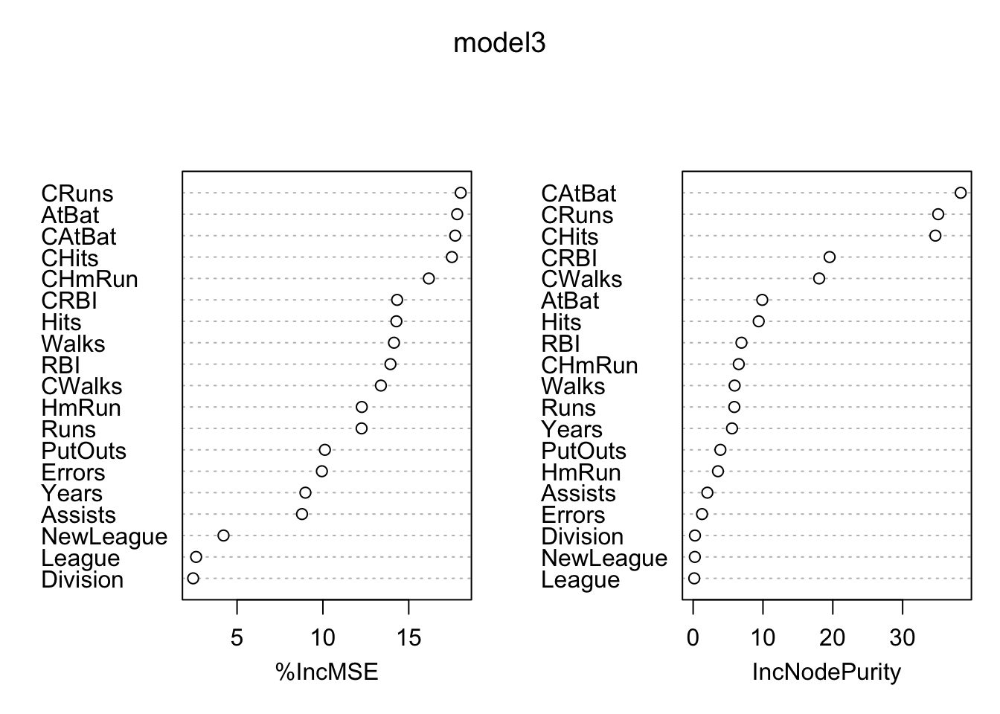
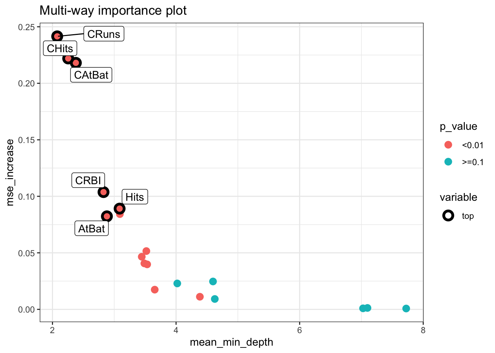
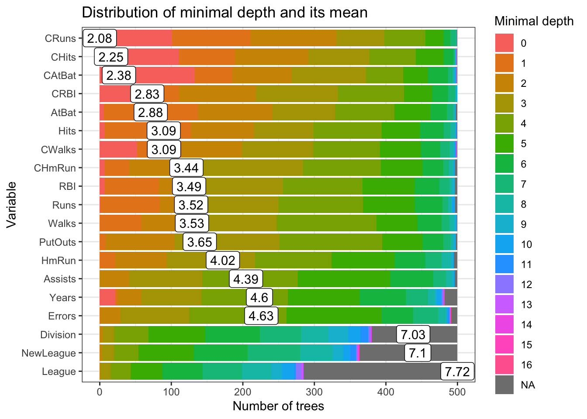
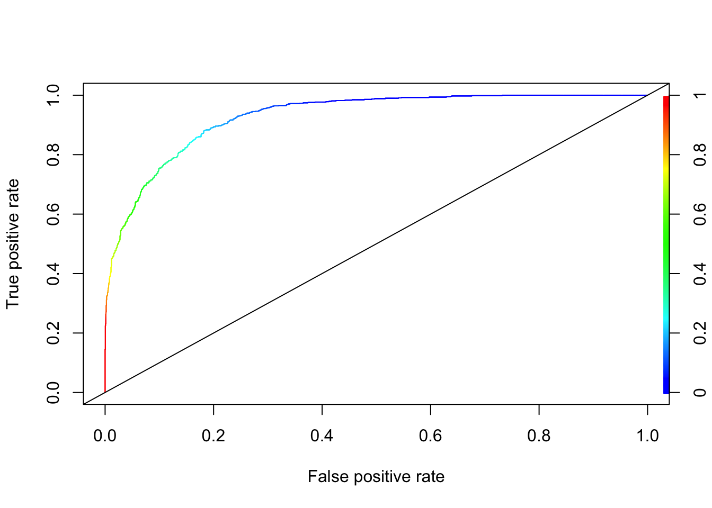

Chapter 14 Ensemble Applications
To conclude this section we will cover classification and regression applications using bagging, random forest and, boosting. First we will start with a classification problem. In comparing different ensemble methods, we must look not only at their accuracy, but evaluate their stability as well.
14.1 Classification
We will again predict survival on the Titanic, using CART, bagging and random forest. We will use the following variables:
survived - 1 if true, 0 otherwise;
sex - the gender of the passenger;
age - age of the passenger in years;
pclass - the passengers class of passage;
sibsp - the number of siblings/spouses aboard;
parch - the number of parents/children aboard.
library(PASWR)
library(ROCR)
library(rpart)
library(randomForest)
# Data
data(titanic3)
nam <- c("survived", "sex", "age", "pclass", "sibsp", "parch")
df <- titanic3[, nam]
dfc <- df[complete.cases(df), ]
dfc$survived <- as.factor(dfc$survived)
AUC1 <- c()
AUC2 <- c()
AUC3 <- c()
n = 100
B = 100
for (i in 1:n) {
set.seed(i+i*100)
ind <- sample(nrow(dfc), nrow(dfc), replace = TRUE)
train <- dfc[ind, ]
test <- dfc[-ind, ]
p = ncol(train)-1
#3 Methods
model1 <- rpart(survived~sex+age+pclass+sibsp+parch,
data=train, method="class") #Single tree, pruned
model2 <- randomForest(survived~sex+age+pclass+sibsp+parch,
ntree = B, mtry = p, data = train) #Bagged
model3 <- randomForest(survived~sex+age+pclass+sibsp+parch,
ntree = B, data = train, localImp = TRUE) # RF
phat1 <- predict(model1, test, type = "prob")
phat2 <- predict(model2, test, type = "prob")
phat3 <- predict(model3, test, type = "prob")
#AUC1
pred_rocr1 <- prediction(phat1[,2], test$survived)
auc_ROCR1 <- performance(pred_rocr1, measure = "auc")
AUC1[i] <- auc_ROCR1@y.values[[1]]
#AUC2
pred_rocr2 <- prediction(phat2[,2], test$survived)
auc_ROCR2 <- performance(pred_rocr2, measure = "auc")
AUC2[i] <- auc_ROCR2@y.values[[1]]
#AUC3
pred_rocr3 <- prediction(phat3[,2], test$survived)
auc_ROCR3 <- performance(pred_rocr3, measure = "auc")
AUC3[i] <- auc_ROCR3@y.values[[1]]
}
model <- c("Single-Tree", "Bagging", "RF")
AUCs <- c(mean(AUC1), mean(AUC2), mean(AUC3))
sd <- c(sqrt(var(AUC1)), sqrt(var(AUC2)), sqrt(var(AUC3)))
data.frame(model, AUCs, sd) ## model AUCs sd
## 1 Single-Tree 0.8129740 0.02585391
## 2 Bagging 0.8128962 0.01709652
## 3 RF 0.8411901 0.01698504There is a consensus that we can determine a bagged model’s test error without using cross-validation. We used randomForest for bagging in the previous application. By default, bagging grows classification trees to their maximal size. If we want to prune each tree, however, it is not clear whether or not this may decrease prediction error. Let’s see if we can obtain a similar result with our manual bagging using rpart pruned and unpruned:
n <- 100
B <- 500
AUCp <- c()
AUCup <- c()
for (i in 1:n) {
set.seed(i+i*100)
ind <- sample(nrow(dfc), nrow(dfc), replace = TRUE)
train <- dfc[ind, ]
test <- dfc[-ind, ]
phatp <- matrix(0, B, nrow(test))
phatup <- matrix(0, B, nrow(test))
for (j in 1:B) {
set.seed(j+j*2)
ind <- sample(nrow(train), nrow(train), replace = TRUE)
tr <- train[ind, ]
modelp <- rpart(survived ~ sex + age + pclass + sibsp + parch,
data = tr, method = "class") # Pruned
modelup <- rpart(survived ~ sex + age + pclass + sibsp + parch,
data = tr,
control = rpart.control(minsplit = 2, minbucket = 1
, cp = 0),
method = "class") # Unpruned
phatp[j, ] <- predict(modelp, test, type = "prob")[, 2]
phatup[j, ] <- predict(modelup, test, type = "prob")[, 2]
}
# Averaging for B Trees
phatpr <- apply(phatp, 2, mean)
phatupr <- apply(phatup, 2, mean)
# AUC pruned
pred_rocr <- prediction(phatpr, test$survived)
auc_ROCR <- performance(pred_rocr, measure = "auc")
AUCp[i] <- auc_ROCR@y.values[[1]]
# AUC unpruned
pred_rocr <- prediction(phatupr, test$survived)
auc_ROCR <- performance(pred_rocr, measure = "auc")
AUCup[i] <- auc_ROCR@y.values[[1]]
}
model <- c("Pruned", "Unpruned")
AUCs <- c(mean(AUCp), mean(AUCup))
sd <- c(sqrt(var(AUCp)), sqrt(var(AUCup)))
data.frame(model, AUCs, sd) ## model AUCs sd
## 1 Pruned 0.8523158 0.01626892
## 2 Unpruned 0.8180802 0.01693003We can see a significant reduction in uncertainty and improvement in accuracy relative to a single tree. When we use “unpruned” single-tree using rpart() for bagging, the result becomes very similar to one that we obtain with random forest. Using pruned trees for bagging improves the accuracy in our case.
This would also be the case in regression trees, where we would be averaging yhat’s and calculating RMSPE and its standard deviations instead of AUC.
14.2 Regression
Consider the data we used earlier chapters to predict baseball player’s salary:
library(ISLR)
remove(list = ls())
data(Hitters)
df <- Hitters[complete.cases(Hitters$Salary), ]Let’s use only a single tree with bagging:
library(rpart)
# Data
df$logsal <- log(df$Salary)
df <- df[, -19]
n = 100
B = 500
RMSPEp <- c()
RMSPEup <- c()
for (i in 1:n) {
set.seed(i+i*8)
ind <- sample(nrow(df), nrow(df), replace = TRUE)
train <- df[ind, ]
test <- df[-ind, ]
yhatp <- matrix(0, B, nrow(test))
yhatup <- matrix(0, B, nrow(test))
for (j in 1:B) {
set.seed(j+j*2)
ind <- sample(nrow(train), nrow(train), replace = TRUE)
tr <- train[ind, ]
modelp <- rpart(logsal ~ ., data = tr, method = "anova") # Pruned
modelup <- rpart(logsal ~ ., data = tr,
control = rpart.control(minsplit = 2, minbucket = 1
,cp = 0),
method = "anova") # unpruned
yhatp[j,] <- predict(modelp, test)
yhatup[j,] <- predict(modelup, test)
}
# Averaging for B Trees
yhatpr <- apply(yhatp, 2, mean)
yhatupr <- apply(yhatup, 2, mean)
RMSPEp[i] <- sqrt(mean((test$logsal - yhatpr)^2))
RMSPEup[i] <- sqrt(mean((test$logsal - yhatupr)^2))
}
model <- c("Pruned", "Unpruned")
RMSPEs <- c(mean(RMSPEp), mean(RMSPEup))
sd <- c(sqrt(var(RMSPEp)), sqrt(var(RMSPEup)))
data.frame(model, RMSPEs, sd) ## model RMSPEs sd
## 1 Pruned 0.5019840 0.05817388
## 2 Unpruned 0.4808079 0.06223845With and without pruning, the results are very similar. Let’s put all these together and do it with Random Forest:
library(randomForest)
library(rpart)
# Data
remove(list = ls())
data(Hitters)
df <- Hitters[complete.cases(Hitters$Salary), ]
df$logsal <- log(df$Salary)
df <- df[, -19]
n <- 100
B <- 500
RMSPE1 <- c()
RMSPE2 <- c()
RMSPE3 <- c()
for (i in 1:n) {
set.seed(i+i*8)
ind <- sample(nrow(df), nrow(df), replace = TRUE)
train <- df[ind, ]
test <- df[-ind, ]
p = ncol(train)-1
model1 <- rpart(logsal~., data =train) # Single Tree
model2 <- randomForest(logsal~., ntree = B, mtry = p, data = train) #Bagged
model3 <- randomForest(logsal~., ntree = B, localImp = TRUE, data = train) # RF
yhat1 <- predict(model1, test)
yhat2 <- predict(model2, test)
yhat3 <- predict(model3, test)
RMSPE1[i] <- sqrt(mean((test$logsal - yhat1)^2))
RMSPE2[i] <- sqrt(mean((test$logsal - yhat2)^2))
RMSPE3[i] <- sqrt(mean((test$logsal - yhat3)^2))
}
model <- c("Single-Tree", "Bagging", "RF")
RMSPEs <- c(mean(RMSPE1), mean(RMSPE2), mean(RMSPE3))
sd <- c(sqrt(var(RMSPE1)), sqrt(var(RMSPE2)), sqrt(var(RMSPE3)))
data.frame(model, RMSPEs, sd) ## model RMSPEs sd
## 1 Single-Tree 0.5739631 0.05360920
## 2 Bagging 0.4807763 0.06119187
## 3 RF 0.4631194 0.06045187Random forest has the lowest RMSPE.
14.3 Exploration
While the task in machine learning is to achieve the best predictive capacity, for many applications identifying the major predictors could be the major objective. Of course, finding the most important predictors is contingent on the model’s predictive performance. As we discussed earlier, however, there is a trade-off between prediction accuracy and interpretability. Although there are many different aspects of interpretability, it refer to understanding the relationship between the predicted outcome and the predictors.
The interpretability in predictive modeling is an active research area. Two excellent books on the subject provide much needed comprehensive information about the interpretability and explanatory analysis in machine learning: Interpretable Machine Learning by Christoph Molnar and Explanatory Model Analysis by Biecek and Burzykowski (2020).
Explorations of predictive models are classified in two major groups. The first one is the instance-level exploration, or example-based explanation methods, which present methods for exploration of a model’s predictions for a single observation. For example, for a particular subject (person, firm, patient), we may want to know contribution of the different features to the predicted outcome for the subject. The main idea is to understand marginal effect of a predictor on the prediction for a specific subject. There are two important methods in this level: Shapley Additive Explanations (SHAP) and Local Interpretable Model-agnostic Explanations (LIME). We will not explain and apply them here in this book. These two methods are easily accessible with multiple examples in both books we cited ealrier.
The second group of explanation methods focuses on dataset-level explainers, which help understand the average behavior of a machine learning model for an entire set of observations. Here, we will focus on several variable-importance measures. They are permutation-based variable importance metrics offering a model-agnostic approach to the assessment of the influence of an explanatory variable on a model’s performance.
There are several options to evaluate how important is the variable \(x\) in predictions. One major method is the permutation-based variable-importance in which the effect of a variable is removed through a random reshuffling of the data in \(x\). This method takes the original data under \(x\), permutates (mixes) its values, and gets “new” data, on which computes the weighted decrease of impurity corresponding to splits along the variable \(x\) and averages this quantity over all trees. If a variable is an important predictor in the model, after its permutation, the mean decrease impurity (MDI - MeanDecreaseGini) rises. It is shown that building a tree with additional irrelevant variables does not alter the importance of relevant variables in an infinite sample setting.
Another measure of significance, Mean Decrease Accuracy (MDA), stems from the idea that if the variable is not important, rearranging its values should not degrade prediction accuracy. The MDA relies on a different principle and uses the out-of-bag error estimate. Every tree in the forest has its own out-of-bag sample, on which the prediction accuracy is measured. To calculate MDA, the values of the variable in the out-of-bag-sample are randomly shuffled and the decrease in prediction accuracy on the shuffled data is measured. This process is repeated for all variables and trees. The MDA averaged over all trees is ranked. If a variable has insignificant predictive power, shuffling may not lead to substantial decrease in accuracy.
For a numeric outcome (regression problem) there are two similar measures. The percentage increase in mean square error (%IncMSE), which is calculated by shuffling the values of the out-of-bag samples, is analogous to MDA. Increase in node purity (IncNodePurity), which is calculated based on the reduction in sum of squared errors whenever a variable is chosen to split is, analogous to MDI.
Here are the variable importance measures for our random forest application (model3):
library(randomForest)
varImpPlot(model3)
And, the partial dependence plot gives a graphical representation of the marginal effect of a variable on the class probability (classification) or response (regression). The intuition behind it is simple: change the value of a predictor and see how much the prediction will change (log wage in our example).
partialPlot(model3, test, CRuns, xlab="CRuns",
main="Effects of CRuns",
col = "red", lwd = 3)
There are several libraries that we can use to improve presentation of permutation-based variable importance metrics: the randomForestExplainer package (see its vignette) (Palu_2012?) and.the DALEX packages.
library(randomForestExplainer)
importance_frame <- measure_importance(model3)
importance_frame## variable mean_min_depth no_of_nodes mse_increase node_purity_increase
## 1 Assists 4.385264 2351 0.0111643040 2.0354183
## 2 AtBat 2.880632 2691 0.0823060539 9.8976694
## 3 CAtBat 2.378316 2598 0.2180919045 38.3175006
## 4 CHits 2.254316 2711 0.2219603757 34.6913645
## 5 CHmRun 3.444948 2556 0.0465389503 6.5334618
## 6 CRBI 2.826000 2752 0.1037441042 19.5413640
## 7 CRuns 2.076316 2731 0.2415297175 35.0893626
## 8 CWalks 3.090316 2579 0.0842675407 18.0455320
## 9 Division 7.025920 691 0.0009003443 0.2610306
## 10 Errors 4.626844 2080 0.0091803849 1.2750433
## 11 Hits 3.086316 2582 0.0891232078 9.3889994
## 12 HmRun 4.019580 2229 0.0229235515 3.5544146
## 13 League 7.723940 442 0.0007442309 0.1574101
## 14 NewLeague 7.097292 627 0.0012483369 0.2430058
## 15 PutOuts 3.654632 2593 0.0174281111 3.9026093
## 16 RBI 3.486948 2620 0.0406771125 6.9162313
## 17 Runs 3.518948 2543 0.0515670394 5.8962241
## 18 Walks 3.532316 2576 0.0397964535 5.9405180
## 19 Years 4.597688 1716 0.0246697278 5.5647402
## no_of_trees times_a_root p_value
## 1 496 0 3.136068e-04
## 2 498 5 2.277643e-26
## 3 499 133 2.885642e-18
## 4 499 110 2.632589e-28
## 5 497 7 4.203385e-15
## 6 500 55 1.727502e-32
## 7 499 101 2.602255e-30
## 8 499 52 8.510193e-17
## 9 380 0 1.000000e+00
## 10 491 0 9.939409e-01
## 11 499 7 5.036363e-17
## 12 495 0 2.179972e-01
## 13 285 0 1.000000e+00
## 14 363 0 1.000000e+00
## 15 498 0 7.131388e-18
## 16 497 7 4.777556e-20
## 17 497 1 3.461522e-14
## 18 499 0 1.432750e-16
## 19 482 22 1.000000e+00This table shows few more metrics in addition to mse_increase and node_purity_increase. The first column, mean_min_depth, the average of the first time this variable is used to split the tree. Therefore, more important variables have lower minimum depth values. The metric no_of_nodes shows the total number of nodes that use for splitting. Finally, times_a_root shows how many times the split occurs at the root. The last column, p_value for the one-sided binomial test, which tells us whether the observed number of of nodes in which the variable was used for splitting exceeds the theoretical number of successes if they were random.
We can take advantage of several multidimensional plots from the randomForestExplainer package:
plot_multi_way_importance(importance_frame, x_measure = "mean_min_depth",
y_measure = "mse_increase",
size_measure = "p_value", no_of_labels = 6)
min_depth_frame <- min_depth_distribution(model3)
plot_min_depth_distribution(min_depth_frame, mean_sample = "all_trees", k =20,
main = "Distribution of minimal depth and its mean")
14.4 Boosting Applications
We need to tune the boosting applications with gbm(). There are three tuning parameters: h, B, and D. We will do the tuning with grid search and apply parallel processing. We will have both regression and classification problems. Finally we will compare OLS, CART, Bagging, RF and boosting.
14.4.1 Regression
library(ISLR)
data(Hitters)
df <- Hitters[complete.cases(Hitters$Salary), ]
df$Salary <- log(df$Salary)
# Test/Train Split
set.seed(1)
ind <- sample(nrow(df), nrow(df), replace = TRUE)
train <- df[ind, ]
test <- df[-ind, ]This will give you an idea how tuning the boosting by using h would be done:
library(gbm)
h <- seq(0.01, 1.8, 0.01)
test_mse <- c()
# D = 1 and B = 1000
for(i in 1:length(h)){
boos <- gbm(Salary~., distribution = "gaussian", n.trees = 1000,
interaction.depth = 1, shrinkage = h[i], data = train)
prboos <- predict(boos, test, n.trees = 100)
test_mse[i] <- mean((test$Salary - prboos) ^ 2)
}
plot(h, test_mse, type = "l", col = "blue", main = "MSE - Prediction")
h[which.min(test_mse)]## [1] 0.08min(test_mse)## [1] 0.181286A complete but limited grid search is here:
library(gbm)
h <- seq(0.01, 0.3, 0.01)
B <- c(100, 300, 500, 750, 900)
D <- 1:2
grid <- as.matrix(expand.grid(D, B, h))
mse <-c()
sdmse <-c()
for(i in 1:nrow(grid)){
test_mse <- c()
for (j in 1:20) {
try({
set.seed(j)
ind <- sample(nrow(df), nrow(df), replace = TRUE)
train <- df[ind, ]
test <- df[-ind, ]
boos <- gbm(Salary~., distribution ="gaussian", n.trees = 1000,
interaction.depth = grid[i,1], shrinkage = grid[i,3], data = train)
prboos <- predict(boos, test, n.trees = grid[i,2])
test_mse[j] <- mean((test$Salary - prboos) ^ 2)
},
silent = TRUE)
}
mse[i] <- mean(test_mse)
sdmse[i] <- sd(test_mse)
}
min(mse)## [1] 0.2108654grid[as.numeric(which.min(mse)), ]## Var1 Var2 Var3
## 2e+00 9e+02 1e-0214.4.2 Random search with parallel processing
Now, we will apply a random grid search introduced by Bergstra and Bengio in Random Search for Hyper-Parameter Optimization) (Bergs_2012?). This paper shows that randomly chosen trials are more efficient for hyperparameter optimization than trials on a grid. Random search is a slight variation on grid search. Instead of searching over the entire grid, random search evaluates randomly selected parts on the grid.
To characterize the performance of random search, the authors use the analytic form of the expectation. The expected probability of finding the target is \(1.0\) minus the probability of missing the target with every single one of \(T\) trials in the experiment. If the volume of the target relative to the unit hypercube is \((v / V=0.01)\) and there are \(T\) trials, then this probability of finding the target is
\[ 1-\left(1-\frac{v}{V}\right)^T=1-0.99^T . \] In more practical terms, for any distribution over a sample space with a maximum, we can find the number of randomly selected points from the grid. First, we define the confidence level, say 95%. Then we decide how many points we wish to have around the maximum. We can decide as a number or directly as a percentage. Let’s say we decide 0.01% interval around the maximum. Then the formula will be
\[ 1-(1-0.01)^T>0.95, \] which can be solved as
\[ \text{T} = \log (1-0.95)/\log (1-0.01) \]
We also apply a parallel multicore processing using doParallel and foreach() to accelerate the grid search. More details can be found at Getting Started with doParallel and foreach.
library(gbm)
library(doParallel)
library(foreach)
h <- seq(0.001, 0.25, 0.001)
B <- seq(100, 800, 20)
D <- 1:4
grid <- as.matrix(expand.grid(D, B, h))
#Random grid-search
conf_lev <- 0.95
num_max <- 5 # we define it by numbers
n <- log(1-conf_lev)/log(1-num_max/nrow(grid))
set.seed(123)
ind <- sample(nrow(grid), nrow(grid)*(n/nrow(grid)), replace = FALSE)
comb <- grid[ind, ]
# Set-up for multicore loops
trials <- 1:nrow(comb)
numCores <- detectCores()
registerDoParallel(numCores)
# Bootstrapping with parallel process
lst <- foreach(k=trials, .combine=c, .errorhandling = 'remove') %dopar% {
test_mse <- c()
for (j in 1:10) {
try({
set.seed(j)
ind <- sample(nrow(df), nrow(df), replace = TRUE)
train <- df[ind, ]
test <- df[-ind, ]
boos <- gbm(Salary~., distribution ="gaussian", n.trees=1000,
interaction.depth =comb[k,1], shrinkage = comb[k,3], data = train)
prboos <- predict(boos, test, n.trees = comb[k,2])
test_mse[j] <- mean((test$Salary - prboos)^2)
},
silent = TRUE)
}
list(c(k, mean(test_mse), sd(test_mse)))
}
stopImplicitCluster()
unlst <- do.call(rbind, lst)
result <- cbind(comb[unlst[,1],], unlst)
sorted <- result[order(result[,5]), -4]
colnames(sorted) <- c("D", "B", "h", "MSPE", "sd")
head(sorted)## D B h MSPE sd
## [1,] 2 360 0.024 0.2057671 0.05657079
## [2,] 2 300 0.024 0.2060013 0.05807494
## [3,] 2 340 0.022 0.2061847 0.05827857
## [4,] 2 340 0.023 0.2061895 0.05823719
## [5,] 2 320 0.023 0.2062056 0.05874694
## [6,] 2 360 0.021 0.2062124 0.05785775You can increase for (j in 1:10) to for (j in 1:50) depending on your computer’s capacity.
14.4.3 Boosting vs. Others
Let’s add OLS to this competition just for curiosity. Here is a one possible script:
library(ISLR)
library(randomForest)
library(rpart)
df <- Hitters[complete.cases(Hitters$Salary), ]
df$Salary <- log(df$Salary)
# Containers
mse_cart <- c(0)
mse_bag <- c(0)
mse_rf <- c(0)
mse_boost <- c(0)
mse_ols <- c(0)
for(i in 1:200){
set.seed(i)
ind <- sample(nrow(df), nrow(df), replace = TRUE)
train <- df[ind, ]
test <- df[-ind, ]
OLS <- lm(Salary~., data = train)
pols <- predict(OLS, test)
cart <- rpart(Salary~., data = train)
pcart <- predict(cart, test)
bags <- randomForest(Salary ~., mtry = 19, data = train)
pbag <- predict(bags, test)
rf <- randomForest(Salary ~., data = train)
prf <- predict(rf, test)
boost <- gbm(Salary~., distribution ="gaussian", n.trees = 1000,
data = train) # without a grid search
pboost <- predict(boost, test, n.trees = 100)
mse_ols[i] <- mean((test$Salary - pols)^2)
mse_cart[i] <- mean((test$Salary - pcart)^2)
mse_bag[i] <- mean((test$Salary - pbag)^2)
mse_rf[i] <- mean((test$Salary - prf)^2)
mse_boost[i] <- mean((test$Salary - pboost)^2)
}
# Bootstrapping Results
a <- matrix(c(mean(mse_cart), mean(mse_bag), mean(mse_rf), mean(mse_boost), mean(mse_ols)), 5, 1)
row.names(a) <- c("mse_cart", "mse_bag", "mse_rf", "mse_boost", "mse_ols")
a## [,1]
## mse_cart 0.3172687
## mse_bag 0.2205504
## mse_rf 0.2057802
## mse_boost 0.2454886
## mse_ols 0.4584240b <- matrix(c(sqrt(var(mse_cart)), sqrt(var(mse_bag)), sqrt(var(mse_rf)), sqrt(var(mse_boost)), sqrt(var(mse_ols))), 5, 1)
row.names(b) <- c("mse_cart", "mse_bag", "mse_rf", "mse_boost", "mse_ols")
b## [,1]
## mse_cart 0.07308726
## mse_bag 0.06272648
## mse_rf 0.05976196
## mse_boost 0.05923404
## mse_ols 0.06907506The random forest and boosting have similar performances. However, boosting and is not tuned in the algorithm. With the full grid search in the previous algorithm, boosting would be a better choice.
Let’s have a classification example.
14.4.4 Classification
A simulated data set containing sales of child car seats at 400 different stores from. We will predict the sale, a binary variable that will be 1 if the sale is higher than 8. See ISLR (ISLR_Car?) for the details.
library(ISLR)
df <- Carseats
str(df)## 'data.frame': 400 obs. of 11 variables:
## $ Sales : num 9.5 11.22 10.06 7.4 4.15 ...
## $ CompPrice : num 138 111 113 117 141 124 115 136 132 132 ...
## $ Income : num 73 48 35 100 64 113 105 81 110 113 ...
## $ Advertising: num 11 16 10 4 3 13 0 15 0 0 ...
## $ Population : num 276 260 269 466 340 501 45 425 108 131 ...
## $ Price : num 120 83 80 97 128 72 108 120 124 124 ...
## $ ShelveLoc : Factor w/ 3 levels "Bad","Good","Medium": 1 2 3 3 1 1 3 2 3 3 ...
## $ Age : num 42 65 59 55 38 78 71 67 76 76 ...
## $ Education : num 17 10 12 14 13 16 15 10 10 17 ...
## $ Urban : Factor w/ 2 levels "No","Yes": 2 2 2 2 2 1 2 2 1 1 ...
## $ US : Factor w/ 2 levels "No","Yes": 2 2 2 2 1 2 1 2 1 2 ...#Change SALES to a factor variable
df$Sales <- ifelse(Carseats$Sales <= 8, 0, 1)
str(df$Sales)## num [1:400] 1 1 1 0 0 1 0 1 0 0 ...library(PASWR)
library(ROCR)
library(rpart)
library(randomForest)
df <- df[complete.cases(df), ]
df$d <- as.factor(df$Sales)
n <- 50
B <- 1000
AUC1 <- c()
AUC2 <- c()
AUC3 <- c()
AUC4 <- c()
for (i in 1:n) {
set.seed(i)
ind <- sample(nrow(df), nrow(df), replace = TRUE)
train <- df[ind, ]
test <- df[-ind, ]
p = ncol(train)-1
# We used two different outcome structure: "Sales" and "d"
# "d" is a factor and "Sales" is numeric
# Factor variable is necessary for RF but GBM needs a numeric variable
# That's sometimes annoying but wee need to be careful about the data
model1 <- rpart(Sales~., data=train[,-12], method = "class")
model2 <- randomForest(d~., ntree = B, mtry = p, data = train[, -1]) #Bagged
model3 <- randomForest(d~., ntree = B, data = train[, -1]) # RF
model4 <- gbm(Sales~., data=train[,-12], n.trees = B,
distribution = "bernoulli") # Boosting without grid search
phat1 <- predict(model1, test[,-12], type = "prob")
phat2 <- predict(model2, test[,-1], type = "prob")
phat3 <- predict(model3, test[,-1], type = "prob")
phat4 <- predict(model4, n.trees = B, test[,-12], type = "response")
#AUC1
pred_rocr1 <- prediction(phat1[,2], test$Sales)
auc_ROCR1 <- performance(pred_rocr1, measure = "auc")
AUC1[i] <- auc_ROCR1@y.values[[1]]
#AUC2
pred_rocr2 <- prediction(phat2[,2], test$d)
auc_ROCR2 <- performance(pred_rocr2, measure = "auc")
AUC2[i] <- auc_ROCR2@y.values[[1]]
#AUC3
pred_rocr3 <- prediction(phat3[,2], test$d)
auc_ROCR3 <- performance(pred_rocr3, measure = "auc")
AUC3[i] <- auc_ROCR3@y.values[[1]]
#AUC4
pred_rocr4 <- prediction(phat4, test$Sales)
auc_ROCR4 <- performance(pred_rocr4, measure = "auc")
AUC4[i] <- auc_ROCR4@y.values[[1]]
}
model <- c("Single-Tree", "Bagging", "RF", "Boosting")
AUCs <- c(mean(AUC1), mean(AUC2), mean(AUC3), mean(AUC4))
sd <- c(sqrt(var(AUC1)), sqrt(var(AUC2)), sqrt(var(AUC3)), sqrt(var(AUC4)))
data.frame(model, AUCs, sd) ## model AUCs sd
## 1 Single-Tree 0.7607756 0.03203628
## 2 Bagging 0.8642944 0.02670766
## 3 RF 0.8778809 0.02356684
## 4 Boosting 0.9176274 0.01791244The results are very telling: booster is a clear winner for prediction accuracy and stability. When we have these machine learning applications, one should always show the “baseline” prediction that we can judge the winner performance: A simple LPM would be a good baseline model:
AUC5 <- c()
for (i in 1:100) {
set.seed(i)
ind <- sample(nrow(df), nrow(df), replace = TRUE)
train <- df[ind, ]
test <- df[-ind, ]
model <- lm(Sales ~ ., data= train[,-12])
phat5 <- predict(model, test[, -12])
pred_rocr5 <- prediction(phat5, test$Sales)
auc_ROCR5 <- performance(pred_rocr5, measure = "auc")
AUC5[i] <- auc_ROCR5@y.values[[1]]
}
mean(AUC5)## [1] 0.9546986sqrt(var(AUC5)) ## [1] 0.0117673I choose this example to show that we cannot assume that our complex algorithms will always be better than a simple OLS. We judge the success of prediction not only its own AUC and stability, but also how much it improves over a benchmark.
14.4.5 AdaBoost.M1
Let’s apply AdaBoost to our example to see if we can have any improvements
library(JOUSBoost)
library(ISLR)
df <- Carseats
#Change SALES to a factor variable
df$Sales <- ifelse(Carseats$Sales <= 8, -1, 1) #adaboost requires -1,1 coding
str(df$Sales)## num [1:400] 1 1 1 -1 -1 1 -1 1 -1 -1 ...# adaboost requires X as a matrix
# so factor variables must be coded as numerical
# With `one-hot()`
library(mltools)
library(data.table)
df_new <- one_hot(as.data.table(df))Now, we are ready:
rnd = 100
AUC <- c()
for (i in 1:100) {
set.seed(i)
ind <- sample(nrow(df_new), nrow(df_new), replace = TRUE)
train <- df_new[ind, ]
test <- df_new[-ind, ]
ada <- adaboost(as.matrix(train[,-"Sales"]),
train$Sales, tree_depth = 1, n_rounds = rnd)
phat <- predict(ada, test, type="prob")
pred_rocr <- prediction(phat, test$Sales)
auc_ROCR <- performance(pred_rocr, measure = "auc")
AUC[i] <- auc_ROCR@y.values[[1]]
}
mean(AUC)## [1] 0.9258234sqrt(var(AUC)) ## [1] 0.0183194It’s slightly better than the gradient boosting (gbm) but not much from LPM.
14.4.6 Classification with XGBoost
Before jumping into an example, let’s first understand about the most frequently used hyperparameters in xgboost. You can refer to its official documentation for more details.
We will classify them in three groups:
- Booster type:
Booster = gbtreeis the default. It could be set togblinearordart. The first one uses a linear model and the second one refers to Dropout Additive Regression Trees. When constructing a gradient boosting machine, the first few trees at the beginning dominate the model performance relative to trees added later. Thus, the idea of “dropout” is to build an ensemble by randomly dropping trees in the boosting sequence. - Tuning parameters (note that when
gblinearis used, onlynround,lambda, andalphaare used):
nrounds= 100 (default). It controls the maximum number of iterations (or trees for classification).
eta= 0.3. It controls the learning rate. Typically, it lies between 0.01 - 0.3.
gamma= 0. It controls regularization (or prevents overfitting - a higher difference between the train and test prediction performance). It can be used as it the brings improvements when shallow (lowmax_depth) trees are employed.max_depth= 6. It controls the depth of the tree.min_child_weight= 1. It blocks the potential feature interactions to prevent overfitting. (The minimum number of instances required in a child node.)subsample= 1. It controls the number of observations supplied to a tree. Generally, it lies between 0.01 - 0.3. (remember bagging).subsample= 1. It control the number of features (variables) supplied to a tree. Bothsubsampleandsubsamplecan be use to build a “random forest” type learner.lambda= 0, equivalent to Ridge regressionalpha= 1, equivalent to Lasso regression (more useful on high dimensional data sets). When both are set different than zero, it becomes an “Elastic Net”, which we will see later.
- Evaluation parameters:
objective= “reg:squarederror” for linear regression, “binary:logistic” binary classification (it returns class probabilities). See the official guide for more options.eval_metric= no default. Depending on objective selected, it could be one of those:mae,Logloss,AUC,RMSE,error- (#wrong cases/#all cases),mlogloss- multiclass.
Before executing a full-scale grid search, see what default parameters provide you. That’s your “base” model’s prediction accuracy, which can improve from. If the result is not giving you a desired accuracy, as we did in Chapter 13.3.3, set eta = 0.1 and the other parameters at their default values. Using xgb.cv function get best n_rounds and build a model with these parameters. See how much improvement you will get in its accuracy. Then apply the full-scale grid search.
We will use the same data (“Adult”) as we used in Chapter 11.
library(xgboost)
library(mltools)
library(data.table)
train <- read.csv("adult_train.csv", header = FALSE)
varNames <- c("Age",
"WorkClass",
"fnlwgt",
"Education",
"EducationNum",
"MaritalStatus",
"Occupation",
"Relationship",
"Race",
"Sex",
"CapitalGain",
"CapitalLoss",
"HoursPerWeek",
"NativeCountry",
"IncomeLevel")
names(train) <- varNames
data <- train
tbl <- table(data$IncomeLevel)
tbl##
## <=50K >50K
## 24720 7841# we remove some outliers - See Ch.11
ind <- which(data$NativeCountry==" Holand-Netherlands")
data <- data[-ind, ]
#Converting chr to factor with `apply()` family
df <- data
df[sapply(df, is.character)] <- lapply(df[sapply(df, is.character)],
as.factor)
str(df)## 'data.frame': 32560 obs. of 15 variables:
## $ Age : int 39 50 38 53 28 37 49 52 31 42 ...
## $ WorkClass : Factor w/ 9 levels " ?"," Federal-gov",..: 8 7 5 5 5 5 5 7 5 5 ...
## $ fnlwgt : int 77516 83311 215646 234721 338409 284582 160187 209642 45781 159449 ...
## $ Education : Factor w/ 16 levels " 10th"," 11th",..: 10 10 12 2 10 13 7 12 13 10 ...
## $ EducationNum : int 13 13 9 7 13 14 5 9 14 13 ...
## $ MaritalStatus: Factor w/ 7 levels " Divorced"," Married-AF-spouse",..: 5 3 1 3 3 3 4 3 5 3 ...
## $ Occupation : Factor w/ 15 levels " ?"," Adm-clerical",..: 2 5 7 7 11 5 9 5 11 5 ...
## $ Relationship : Factor w/ 6 levels " Husband"," Not-in-family",..: 2 1 2 1 6 6 2 1 2 1 ...
## $ Race : Factor w/ 5 levels " Amer-Indian-Eskimo",..: 5 5 5 3 3 5 3 5 5 5 ...
## $ Sex : Factor w/ 2 levels " Female"," Male": 2 2 2 2 1 1 1 2 1 2 ...
## $ CapitalGain : int 2174 0 0 0 0 0 0 0 14084 5178 ...
## $ CapitalLoss : int 0 0 0 0 0 0 0 0 0 0 ...
## $ HoursPerWeek : int 40 13 40 40 40 40 16 45 50 40 ...
## $ NativeCountry: Factor w/ 41 levels " ?"," Cambodia",..: 39 39 39 39 6 39 23 39 39 39 ...
## $ IncomeLevel : Factor w/ 2 levels " <=50K"," >50K": 1 1 1 1 1 1 1 2 2 2 ...As required by the xgboost package, we need a numeric \(Y\) and all the factor variables have to be one-hot coded
df$Y <- ifelse(data$IncomeLevel==" <=50K", 0, 1)
#Remove `IncomeLevel`
df <- df[, -15]
anyNA(df) # no NA's## [1] FALSE# Initial Split 90-10% split
set.seed(321)
ind <- sample(nrow(df), nrow(df)*0.90, replace = FALSE)
train <- df[ind, ]
test <- df[-ind, ]
# One-hot coding using R's `model.matrix`
ty <- train$Y
tsy <- test$Y
hot_tr <- model.matrix(~.+0, data = train[,-which(names(train) == "Y")])
hot_ts <- model.matrix(~.+0, data = test[,-which(names(train) == "Y")])
# Preparing efficient matrix
ttrain <- xgb.DMatrix(data = hot_tr, label = ty)
ttest <- xgb.DMatrix(data = hot_ts, label = tsy)Now we are ready to set our first xgb.sv with default parameters
params <- list(booster = "gbtree",
objective = "binary:logistic"
)
set.seed(112)
cvb <- xgb.cv( params = params,
nrounds = 100,
data = ttrain,
nfold = 5,
showsd = T,
stratified = T,
print.every.n = 10,
early.stop.round = 20,
maximize = F
)## [1] train-logloss:0.541285+0.000640 test-logloss:0.542411+0.001768
## Multiple eval metrics are present. Will use test_logloss for early stopping.
## Will train until test_logloss hasn't improved in 20 rounds.
##
## [11] train-logloss:0.290701+0.000486 test-logloss:0.302696+0.003658
## [21] train-logloss:0.264326+0.000814 test-logloss:0.285655+0.004132
## [31] train-logloss:0.251203+0.001082 test-logloss:0.280880+0.004269
## [41] train-logloss:0.243382+0.001291 test-logloss:0.279297+0.004772
## [51] train-logloss:0.237065+0.001390 test-logloss:0.278460+0.004780
## [61] train-logloss:0.230541+0.001288 test-logloss:0.278528+0.004913
## [71] train-logloss:0.225721+0.001117 test-logloss:0.279118+0.005197
## Stopping. Best iteration:
## [59] train-logloss:0.231852+0.000732 test-logloss:0.278273+0.004699theb <- cvb$best_iteration
theb## [1] 59model_default <- xgb.train (params = params,
data = ttrain,
nrounds = theb,
watchlist = list(val=ttest,train=ttrain),
print_every_n = 10,
maximize = F ,
eval_metric = "auc")## [1] val-auc:0.898067 train-auc:0.895080
## [11] val-auc:0.922919 train-auc:0.925884
## [21] val-auc:0.927905 train-auc:0.936823
## [31] val-auc:0.928464 train-auc:0.942277
## [41] val-auc:0.929252 train-auc:0.946379
## [51] val-auc:0.928459 train-auc:0.949633
## [59] val-auc:0.928224 train-auc:0.951403And the prediction:
phat <- predict (model_default, ttest)
# AUC
library(ROCR)
pred_rocr <- prediction(phat, tsy)
auc_ROCR <- performance(pred_rocr, measure = "auc")
auc_ROCR@y.values[[1]]## [1] 0.9282243# ROCR
perf <- performance(pred_rocr,"tpr","fpr")
plot(perf, colorize=TRUE)
abline(a = 0, b = 1)
You can go back to Chapter 11.3.2 and see that XGBoost is better than kNN in this example without even a proper grid search.
Both machine learning algorithms embed non-linearity. This is done, in the case of SVMs, through the usage of a kernel method. Neural networks, instead, embed non-linearity by using non-linear activation functions. Both classes of algorithms can, therefore, approximate non-linear decision functions, though with different approaches.
Both SVMs and NNs can tackle the same problem of classification against the same dataset. This means that there’s no reason that derives from the characteristics of the problem for preferring one over the other.
What’s more important, though, is that they both perform with comparable accuracy against the same dataset, if given comparable training. If given as much training and computational power as possible, however, NNs tend to outperform SVMs.
As we’ll see in the next section, though, the time required to train the two algorithms is vastly different for the same dataset.